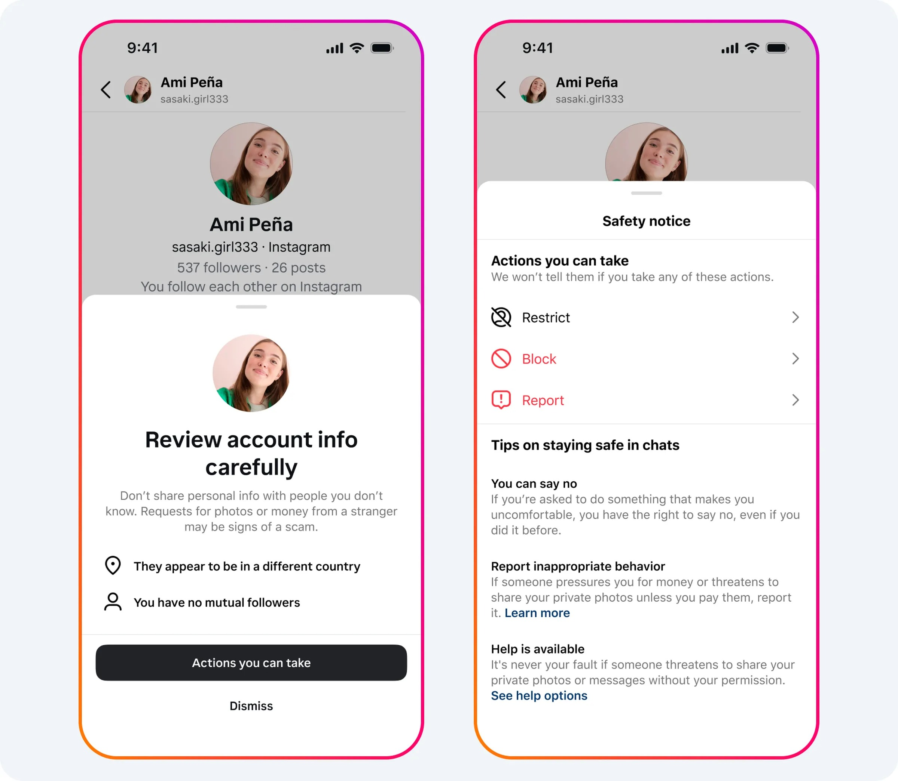

Instagram is launching several new features designed to protect teens from sextortion scams, which occur when scammers threaten to share intimate images of victims unless they receive a payment or more photos.

One guardrail that’s rolling out soon will prevent people from screenshotting or screen recording disappearing images or videos sent in a private message. If the sender enables replays of the image or video, Instagram will block people from opening them on the web. This won’t stop scammers from capturing the image or video by recording it with another device, however.
Starting today, Instagram will begin using certain indicators, like how new an account is, to detect scammy behavior as well. The platform will then prevent these accounts from sending follow requests to teens by blocking their request or moving it to the teen’s spam folder.
It’s also testing a safety notice in Instagram and Messenger that will alert teens if the person they’re talking to is located in a different country, as sextortion scammers often lie about their location.
In addition, Instagram will now start blocking suspicious accounts from viewing the following or followers lists of their victims, which sextortion scammers can use for blackmail. Instagram will similarly prevent suspect accounts from seeing the lists of accounts that have liked a target’s posts, the photos they’re tagged in, and other users tagged in their photos.
To protect kids from viewing obscene photos, Instagram is launching a feature that will automatically detect and blur nude images for users under 18. Instagram started testing this filter in April, and it will be enabled for teens globally by default. Other safety measures coming to the platform include an option to chat with the Crisis Text Line in the US if users report sextortion or child safety issues. It will also show an educational video to teens in the US, UK, Canada, and Australia to spread awareness about sextortion scams, which are on the rise.